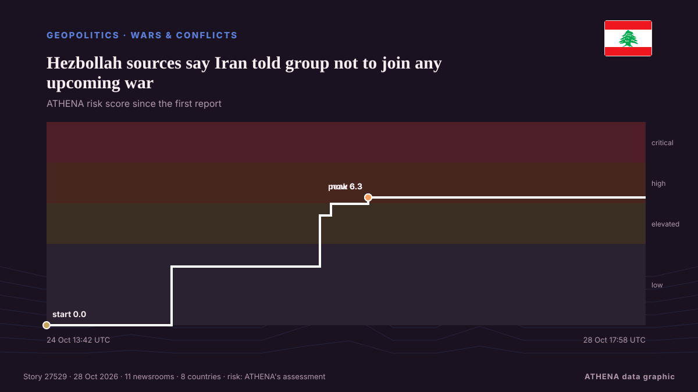

Hezbollah sources say Iran told group not to join any upcoming war

Tehran has informed Hezbollah that it does not want its participation in any upcoming war that may be waged by the U.S. and Israel, sources close to Hezbollah said. von Naharnet
Unabhängig gemeldet von 11 Medien in 8 Ländern seit dem 24. Okt., zuerst von Asharq Al-Awsat (English); die Berichterstattung flaut ab. ATHENA stuft das Risiko als hoch ein (6.2/10), vor allem wegen der Schwere des beschriebenen Schadens und der Qualität der Belege. Die Konfidenz liegt bei 92 % (hoch): 11 Medien bestätigen es unabhängig, bei einer mittleren Verlässlichkeit der Quellen von 79 %.
Warum es wichtig ist: Dieser Tracker verfolgt den Konflikt um Israel, Gaza, das Westjordanland und Libanon – militärische Ereignisse, humanitäre Lage und Diplomatie –, wie Redaktionen weltweit darüber berichten.
Was sich geändert hat: 1 neuer Bericht in den 24 Stunden bis 28. Okt..
Erste Schlagzeile: Hezbollah readies for new regional war with funds from Iran, sources say
Schlagzeilen werden auf Englisch angezeigt, wie veröffentlicht.
Auf einen Blick
Ausgewählt, bewertet und geschrieben nach der veröffentlichten Methodik von ATHENA. Kein Redakteur greift in einzelne Ereignisse ein. So entsteht ATHENA ›
| 24 Oct 13:41 UTC | 1 |
|---|---|
| 24 Oct 19:41 UTC | 0 |
| 25 Oct 01:41 UTC | 0 |
| 25 Oct 07:41 UTC | 2 |
| 25 Oct 13:41 UTC | 0 |
| 25 Oct 19:41 UTC | 0 |
| 26 Oct 01:41 UTC | 0 |
| 26 Oct 07:41 UTC | 5 |
| 26 Oct 13:41 UTC | 9 |
| 26 Oct 19:41 UTC | 0 |
| 27 Oct 01:41 UTC | 0 |
| 27 Oct 07:41 UTC | 5 |
| 27 Oct 13:41 UTC | 0 |
| 27 Oct 19:41 UTC | 0 |
| 28 Oct 01:41 UTC | 0 |
| 28 Oct 07:41 UTC | 0 |
| 28 Oct 13:41 UTC | 1 |
| 24 Oct 13:42 UTC | 0.0 |
|---|---|
| 25 Oct 10:41 UTC | 2.9 |
| 26 Oct 11:26 UTC | 5.4 |
| 26 Oct 13:21 UTC | 6.0 |
| 26 Oct 19:34 UTC | 6.3 |
| 28 Oct 17:58 UTC | 6.2 |
Warum diese Zahlen
Bedeutung
Risiko
Konfidenz
Die Berichterstattung – wer berichtete, und wann
Schlagzeile wie veröffentlicht · öffnet das Original- Asharq Al-Awsat (English) · Saudi-Arabien · Saudi ArabiaHezbollah Renews Pledge Not to Intervene in Support of Tehran
- Naharnet · Libanon · LebanonReport: Hezbollah tells Berri it won't intervene if war is waged on Iran
- Naharnet · Libanon · LebanonFadlallah says Iran hasn't asked Hezbollah to support it if war erupts
- TASS (English) · Russland · RussiaHezbollah vows not to fight on Iran's side if war resumes — Lebanese parliament speaker
- Naharnet · Libanon · LebanonJumblat wants dialogue with Hezbollah, Iran; warns against civil war, Israeli plans
- Naharnet · Libanon · LebanonReport: Hezbollah 'has not given guarantees' it won't intervene in war
- The Straits Times · Singapur · SingaporeHezbollah readies for new regional war with funds from Iran, sources say
- Arab News · Saudi-Arabien · Saudi ArabiaHezbollah readies for new regional war with funds from Iran, sources say
- APA (English) · Aserbaidschan · AzerbaijanHezbollah readies for new regional war with funds from Iran, sources say
- Al-Monitor · Vereinigte Staaten · United StatesHezbollah readies for new regional war with funds from Iran, sources say
- The Jerusalem Post · IsraelHezbollah readies for new regional war with funds from Iran, sources say
- The New Arab · INTHezbollah readies for new regional war with funds from Iran
- Haaretz (English) · IsraelHezbollah is readying to renew war with Israel with funds from Iran, Lebanese sources say
- Asharq Al-Awsat (English) · Saudi-Arabien · Saudi ArabiaHezbollah’s Pledge to Stay Out of Iran War Met with Skepticism in Lebanon
- Naharnet · Libanon · LebanonHezbollah sources say Iran told group not to join any upcoming war
- Naharnet · Libanon · LebanonBassil hopes Hezbollah won't join new war, warns against civil strife
- Mehr News (English) · IranUS isolated more than ever after launching war on Iran